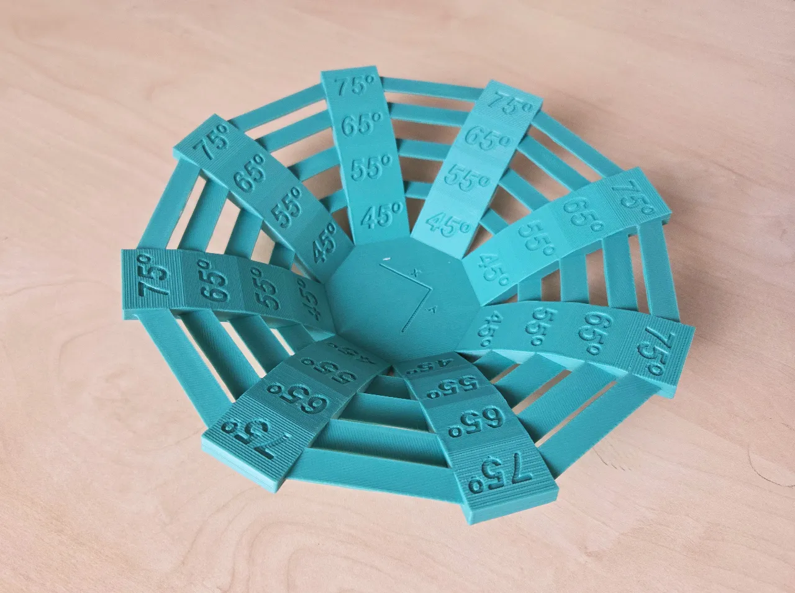

Test pro určení schopnosti našeho stroje tisknout konzoly a mosty v různých úhlech.

Autor modelu:
Autor modelu: Control 3D
Zdroj: Printables
Licence: CC BY-SA 4.0
Model slouží pouze jako ukázka kalibrace a testu tiskárny.